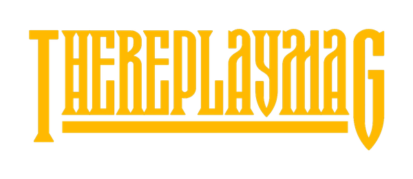
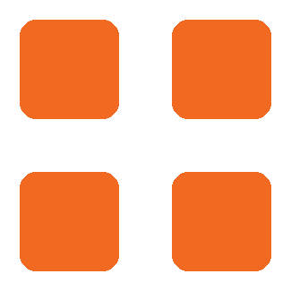
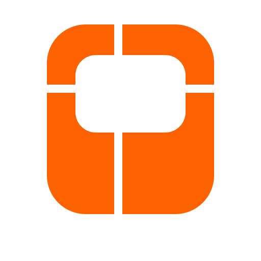

Monthly
Review.
August was the month the portfolio became more operational. The Group established a clearer management layer, TheReplayMAG prepared a coordinated September restart, Oroko moved deeper into real internal use, Ogoro became tangible, and Koroko remained focused on readiness and external data dependencies.
The portfolio is becoming easier to operate because each venture is clearer about what must happen next.
The strongest movement this month was not one isolated launch. It was the creation of a more coherent operating rhythm across the Group, with more explicit product states, evidence, dependencies and next actions.
Five businesses. Different stages.
Health reflects the evidence available at month end, not ambition. “On track” means the next operating gate is understood and supported by recent work.

TheReplayMAG
September operating restart prepared around Studio, Editorial, Replay Go, Frontline and distribution.

Koroko
Strategically important, but readiness evidence and NIPOST/data dependencies remain the key constraint.

Oroko
Internal use continues to expose real product gaps, giving the strongest near-term validation loop.
Ogoro
Moved from concept into platform, process and energy-intelligence mockups, with discovery still the core next step.
Igho
Scope remains deliberately narrow: payroll infrastructure for projects, productions and small teams.
TheReplayMAG
August prepared a coordinated September operating restart, with Studio and Replay Go as the immediate launch surfaces and Frontline maturing into a real fulfilment and publishing system.
Replay’s operating stack matured materially.
Asana now provides the management structure, while GitHub provides strong implementation evidence for Studio Editorial and Replay Go.
Launch-ready direction
By 28 August, Editorial structural redesign and pitch commissioning were merged, client bundle sync was merged, automated smoke/regression/build/bundle/CI were green, and launch-polish QA was the remaining gate ahead of 1 September internal use.
Built as a distribution layer
August commits created the Catalyst project, Creator-backed API, public Slate interface, live API connection, responsive styling, newsletter flow, analytics/source attribution and a 48-hour Creator cache with manual refresh.
From submissions to fulfilment
The current operating definition now spans Desk handoff, WorkDrive source handling, extraction/OCR, AI-assisted editorial production, human review, WordPress publishing, duplicate protection and downstream Replay Go integration.
The September system is explicit.
The 24th Group Asana project now carries the active Replay management record rather than relying on older standalone projects.
Restart around reliable cadence first, using engaged writers and Studio. Use the writer questionnaire to understand pitch versus assignment preference. Mini-mag follows once cadence works.
Social is now inside Marketing. Focus is volunteer confirmation, contact-base clean-up, simple email campaigns and distribution of Editorial output.
Formalise relationship building around collab@thereplaymag.com, CRM as relationship memory and Studio Collab as the management layer. Warm relationships first.
Operations coordinates the restart and monthly rhythm. Work is the recruitment surface, but hiring remains demand-led after Editorial cadence is tested.
Koroko
Koroko remains the Group’s largest strategic infrastructure opportunity, but August was still primarily a readiness and dependency month rather than a validation month.
Public Slate preview and AppSail/private workspace architecture remain the established direction, with API, auth, billing and checker infrastructure already in place from earlier work.
The moat remains less about software construction and more about coverage, accuracy, licensing, update frequency and the right national address-data relationship.
NIPOST access, postcode/address data terms, commercial rights and redistribution constraints remain external dependencies that can materially change the product.
Keep hardening public/API readiness while treating NIPOST and data-quality work as first-class product work rather than an integration afterthought.
Oroko
Oroko continues to have the strongest near-term validation loop because it is being used against real process-mapping needs rather than tested only as a concept.
August work continued around process-library and canvas behaviour, with the product already far enough along to support real process visualisation and structured documentation.
Internal use surfaced concrete usability gaps rather than abstract feature requests, including future-state parity, current/future copying, branch representation and attachment guidance.
The value remains clarity and structured process documentation, not automation. Keeping Oroko narrow protects it from becoming a generic whiteboard or workflow builder.
Continue using Oroko for Group and day-job processes, resolve high-friction internal testing gaps and turn repeated real-world usage into the productisation backlog.
Ogoro
August was the month Ogoro became tangible enough to discuss with potential users. The next risk is building too much before customer discovery proves which operational decisions matter.
Product foundation created
The repository was established with a platform mockup, whitepaper and eight process maps, moving Ogoro from narrative into something reviewable.
Energy intelligence became visible
An energy intelligence dashboard and reports mockup made the first module easier to test against real schools, hotels, hospitals, offices and other operating environments.
Discovery before custom hardware
Prove that the software causes action, savings or operational control before expanding into custom IoT or broad Ogoro One modules.
Igho
Igho was brought into the formal Group portfolio in August. It remains intentionally pre-build while the payroll lifecycle and internal first-use case are kept narrow.
Pay people reliably
Employee setup, bank details, payroll run preparation, funding, approval, transfers, transfer outcomes, payslips and records are the core product.
Simple proof
Payslips and employment records should be simple enough to understand but credible enough to use as proof of employment or income when needed.
Validate the lifecycle
Create a dedicated repo/Asana implementation record when build resumes, then prove the smallest complete payroll run before expanding features.
The management layer now exists.
August established the Group repo as the strategic and operating archive, while Asana remains the execution record and GitHub remains the implementation record.
Group repo
Group thesis, product register, roadmap, operating rhythm, repo standard and monthly review template were added, alongside the refined public portfolio site.
Asana
The 24th Group project was refreshed to make Replay’s September operating structure explicit, while product projects continue to carry detailed work and blockers.
GitHub
Implementation evidence is becoming strong enough to distinguish what was planned, implemented, deployed and genuinely validated rather than treating them as the same thing.
Where judgement is still required.
The aim of the operating system is not to remove founder decisions. It is to make the decisions that genuinely need founder judgement easier to see.
Near-term
- Keep Oroko as the primary product focus through the end of 2026 while using real internal work as validation.
- Decide Koroko data strategy as NIPOST information becomes available, particularly commercial and redistribution rights.
- Protect Ogoro from premature scope expansion until customer discovery proves the Energy module’s action value.
Operating discipline
- Move Replay into an actual publishing cadence rather than another build cycle.
- Keep Igho narrow enough to prove payroll trust before adding HR-adjacent features.
- Use monthly reviews to surface source conflicts and evidence gaps, not simply produce status prose.
September priorities.
September should convert August’s build and planning activity into evidence of use, cadence and operating reliability.